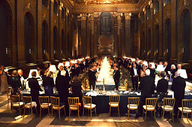
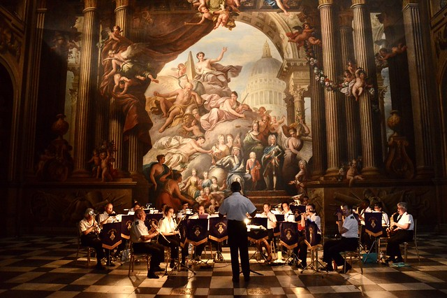
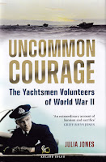

{kind=link}
'Oh no,' I replied, prissily, 'It doesn't work like that.'
It was one of those
happy occasions when we were both right. I knew I was right (of
course!) a speech won't make a blog, but Francis was righter.
When Blog Day approaches each month I wake in the early hours wondering what
event or idea the jolly old subconscious is going to throw up as this month's Chosen One. And yes, as he'd obviously pre-guessed, it was
our evening in The Painted Hall.
Not totally for the
glory, however - though it was glorious.
I thought I had filed it away in some private happy place but during the last few
days, I have been reading books by WW2 Wrens, in preparation for a talk about Rozelle
Raynes's Maid Matelot.
A friend reminded me that, although I had felt overwhelmed by the momentousness
of being asked to speak in 'Britain's Sistine Chapel', for many
people, including Wrens doing their Officers Training Courses, that was simply
the College Dining Room.
{kind=link}
{kind=link}
In Christian Lamb's charming book Beyond the Sea there's an account by the author's friend Mary, a Wren steward, whose job it was to look after the mass of RN personnel,
male and female, young and old, who were passing through the Greenwich Naval College on
accelerated training courses. Mary described scrubbing the wide cold stone stairs leading from
one floor to another, cleaning the carpets by sprinkling with tea leaves and
looking after the 'cabins' of the very senior officers who had been called
back from retirement to act as instructors. She had to wake them with cups of
tea, brush their suits, clean their shoes, then bring in a jug of hot water
for shaving. There was 'no running hot and cold but good old-fashioned basin and ewer and,
I regret to say, also chamber pots under the beds.'
Mary saw that 'these
august-sounding men, all "pukka" RN Captains and Commanders, were only fathers
and grandfathers in uniforms[...] I also suspected that they rather liked a
smiling young girl to wake them in the mornings.' She continues 'I was
neither vain nor ambitious and was quite content to give of my best as an
unglorified waitress-cum housemaid. Somebody had to do it, it freed a man for active service […] More than that, it fulfilled some deep need within me to
give of myself.’
What a gracious
approach to an 'unglamorous' wartime role.
One of my snarky children, looking at the age profile of attendees at the event which I was viewing as a lifetime highlight, commented that The Painted Hall was the dining room of a institution, the Royal Hospital for Seaman, which had been founded to take care of state pensioners, an early c18th care home, perhaps. 'I'm glad to see it's still doing that job.’
But The Painted Hall
was where Nelson lay in state in 1806 as the nation mourned. Those pensioners included men who had fought at Trafalgar. The Painted Hall was designed by Sir
Christopher Wren (with Nicholas Hawksmoor as his deputy) and decorated by Sir
James Thornhill with 200 figures including kings, queens and mythological
creatures, covering 40,000
square feet of walls and ceilings. (The artist was paid by the square yard and 3x the rate for work on the ceiling. He became quite rich.)
Under normal circumstances I’m not sure I’m even all that keen on the baroque style, all that allegory and naked limbs, but for the one evening I just gave in to the splendour. Every so often I glanced upwards and though the gods and goddesses to the high blue heavens. Mary remembered that in their off-duty periods she and the other Wrens used to lie on their backs on the tables and gaze.
Being a guest in The Painted Hall felt like being invited into the heart of the Royal Navy and its place in British history.
Do I even think that’s so great, I ask myself cynically – enforcing imperialism and protecting trade? The C21st head says one thing, the postwar baby-boomer emotions disagree. It’s a bit like succumbing to state ceremonial on big days like the Remembrance Parade or the Queen's funeral. When Francis and I stood up at the end of the evening to sing 'Heart of Oak' and 'Rule Britannia', supported by the band of HMS Sultan, we probably knew we were being ridiculous but we belted it out all the same. ‘That’s your metropolitan-sophisticate reputation in tatters,’ I said to him. But it was like the last night of the Proms, if you go, you join in.
 |
| The band of HMS Sultan in the Upper Hall |
{kind=link}
For days before the dinner we’d tended to snigger about the long emails of instruction we'd received, telling us the correct way to Pass the Port and when we were to Be Upstanding. We were informed that because we were following the traditions of a naval Mess Dinner we could drink the Loyal Toast ‘seated’. I suppose that would avoid the danger of slopping our drink if the ship gave an unexpected lurch while we were raising our glasses to His Majesty. Our friends had agreed that they simply couldn’t be doing with all that nonsense.
I agreed with them of course. But only in my head. When the invitation had arrived – the RNVR Yacht Club had been let down by whatever Admiral they’d invited to do the honours on their 75th anniversary – I rushed upstairs or downstairs to find Francis. ‘I’ve been invited to speak in The Painted Hall,’ I gasped.
{kind=link}
{kind=link}
I galloped off again to unearth the menu and the guest list that my father had kept from 1978 when he’d been an attendee at a retired officers' dinner to mark the 75th Anniversary of the founding of the RNVR itself. The chap in my spot then, had been Lord Carrington PC, KCMG, MC, a former First Lord of the Admiralty who had most recently been Defence Secretary. They hadn’t been short of Admirals either.
As the day approached, imposter syndrome set in in a big way. I did the best I
could to bring things into proportion and to laugh at myself: this was just a yacht club dinner, after all. But it didn’t feel like that – ‘It’s in THE
PAINTED HALL,’ that voice in my head kept reminding me.
I took my best dress to the cleaners,
dug out my mother’s posh earrings and Francis’s mother’s pearls (yes, I normally think
festooning oneself with pricey baubles is pretty silly), and tried to ignore the
slight grouchiness that was creeping into Francis’s voice as he discovered he
was going to need a new dinner jacket, the old one having succumbed to dust and
disuse…Then I worked at my speech. Oh how I worked! Normally I stand up, hope
for the best, feel a bit scared and wing it. But not in The Painted Hall. I was
so damn scared, I realised I was going to have to read what I wanted to
say because I couldn't trust myself to remember it. They asked if I wanted a microphone. Yes please
– this was The Painted Hall. It felt like St Paul’s cathedral.
Finally I understood where the problem lay. I
was an amateur going into a professional’s space. Just as the Yachtsman
Volunteers of the RNV(S)R had done in WW2 or all those Wrens stepping up to do ‘mens jobs’. They coped. So could I.
{kind=link}
I’d been asked to speak for 15 minutes
but the event was running behind schedule and I felt sorry for the Commodore trying to calculate how long it was going to
take everyone to go to the lavatory (to ‘ease springs’ in Navy-speak) before he could get the
speech, the toast and the prize giving done then shepherd his 200 guests safely out of
the building before it closed for the night and we all turned into pumpkins.
So I cut what I could. I made a slight fuss about the positioning of the microphone and I was still worried about the people seated in the far corners of the room. But when I heard my voice reading my words into that amazingly proportioned space, it was an experience that I won’t ever forget - as long as my memory serves.
 |
I have this book to thank for the invitation |
{kind=link}